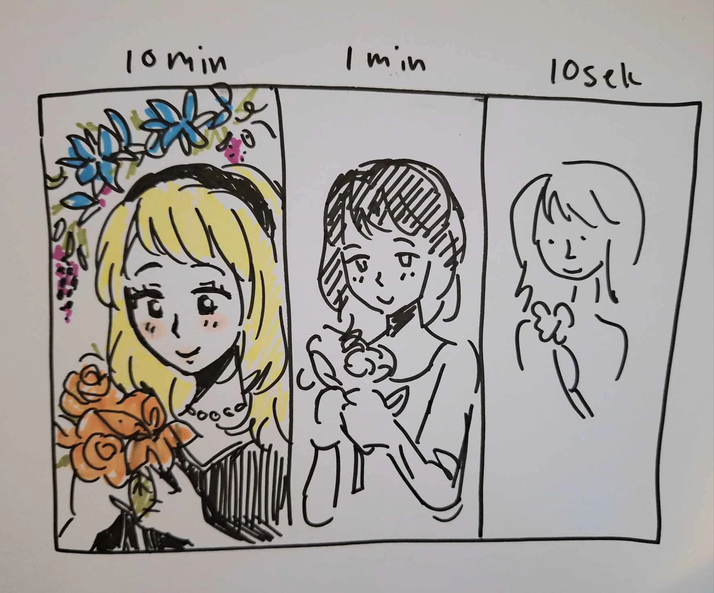

Speed art Challenge
En speed art-challenge går ud på at kunstnere skal forsøge at fuldføre en tegning inden for en begrænset tidsramme. Oftest handler det om at skabe et stykke kunst så hurtigt som muligt, hvilket kan variere fra få sekunder, til minutter til timer eller mere, afhængigt af udfordringens regler. Formålet med speed art-udfordringer er at udfordre kunstnerens kreativitet og evne til at træffe hurtige beslutninger.
